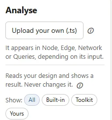

Page 3 of 12 · A. Use the app
Write your own analysis
Optional. Describe an analysis in plain words, let an AI chat write it as one file, and upload it to the app in your browser. An analysis only reads your design: it never changes it.
Orange text like <toolkit-id> = replace it with your own. Grey buttons like Copy = something to click.
01Describe it in three lines
This fills in the starting text below.
Describe it in three lines
This fills in the starting text below.
Remembered in this browser only. Test it later on a design whose answer you know.
02Ask an AI chat
Attach a kit, send the starting text.
Ask an AI chat
Attach a kit, send the starting text.
A kit is a zip with the instructions the AI follows, the exact functions it may use and examples. Not sure which? Use the Design kit.
Design kit (recommended)
The analysis can read each node's Function, size, position and level, each edge's relationship, and calculated values such as area. Works in any project.
I've attached the Spatial Graph Lab design kit. Read PROMPT.md and every file in it, then write ONE design analysis that works in any project (node basics only, no custom fields). My idea: ___ Input: ___ Show the answer as: ___
Graph kit
The analysis sees only node ids and edges (no Functions, sizes or positions). Works in any project.
I've attached the Spatial Graph Lab graph kit. Read PROMPT.md and every file in it, then write ONE graph analysis that follows it exactly. My idea: ___ Input: ___ Show the answer as: ___
Design kit for this project
Also your project's own Functions and fields (such as a target area). Only in the app: open your project, Analyse › ⓘ › This project.
I've attached the Spatial Graph Lab design kit for my project. Read PROMPT.md, PROJECT.md and every file in it, then write ONE design analysis that follows them exactly. It may use my project's Functions and custom fields; list the ones it uses in uses. My idea: ___ Input: ___ Show the answer as: ___
- Open a new chat and attach the kit zipAny AI chat that accepts files, such as claude.ai, chatgpt.com or gemini.google.com. Refuses the zip? Unzip it and attach the
.mdfiles inside instead, or try another chat. - Paste the starting text and send itUse Copy on the dark box above; your three lines are already in it.
The kits side by side, and the template (optional)
| Kit | The analysis can read | Works in |
|---|---|---|
| Graph kit | node ids and edges only | any project |
| Design kit | also each node's Function, size, position, level, each edge's relationship, calculated values such as area | any project |
| Design kit for this project | also your project's Functions and custom fields, listed in its PROJECT.md | projects that have them |
The same kits are in the app: Analyse › the ⓘ beside Upload your own (.ts). Prefer to write it yourself? There, Template gives a commented file to change.
03Save the file it gives you
One .ts file, with the name the AI suggests.
Save the file it gives you
One .ts file, with the name the AI suggests.
Most chats offer the answer as a file: download it, for example largest-room-per-level.ts. It lands in your Downloads folder. If the chat only shows the code, ask: “Please give me this as a file to download.”
The chat only shows code: save it yourself (3 steps)
Windows
- Open Notepad, paste the code.
- File › Save as…, set Save as type to All files (*.*).
- Type the name ending in
.tsand save. Windows hides endings: a file saved aslargest.ts.txtlooks likelargest.tsbut is refused. File Explorer › View › Show › File name extensions shows the real name.
macOS
- Open TextEdit, choose Format › Make Plain Text, paste the code.
- File › Save…, type the name ending in
.ts. - If it asks, choose Use .ts. Finder › Settings… › Advanced › Show all filename extensions shows the real name.
04Upload it and run it
In Analyse, like any other analysis.
Upload it and run it
In Analyse, like any other analysis.
- UploadIn the app, Analyse › Upload your own (.ts) › choose the file.
it appears in Network, Node, Edge or Queries (depending on its input), tagged Yours.
- Run itSelect its input if it has one, then run it. Try it on a design whose answer you know.
- Refused, or a wrong answer?Copy the app's whole message into the chat and ask: “Fix exactly this.” Save the new file and upload it again.

Uploaded analyses are saved with your project; Export project keeps them in the file (Use the app). The same file also works in a toolkit's algorithms/ folder.
Problems: the file is refused · the chat refuses the zip · all upload problems.